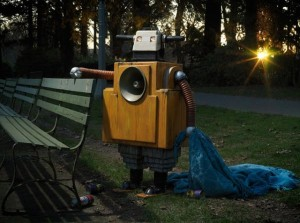
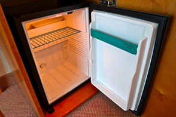
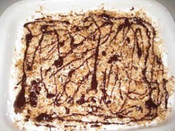
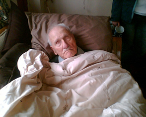
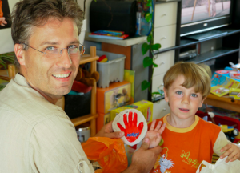

Mon, 26 Mar 2012 15:55:22 +0000
Inventan un robot que pide en el metro
Inventan un robot que pide en el metro
Investigadores japoneses de la Universidad de Osaka presentaron el sábado un robot humanoide especialmente programado para pedir limosna en el metro. Para ello, el Donsimon 3000 es capaz de expresar emociones y soltar un increíble relato de degradación personal cada vez que cambia de vagón. “Le hemos implantado recuerdos de una vida anterior, de modo [...]
Investigadores japoneses de la Universidad de Osaka presentaron el sábado un robot humanoide especialmente programado para pedir limosna en el metro. Para ello, el Donsimon 3000 es capaz de expresar emociones y soltar un increíble relato de degradación personal cada vez que cambia de vagón.
“Le hemos implantado recuerdos de una vida anterior, de modo que, si te pones a hablar con él, enseguida te suelta la chapa de que había sido director de una empresa, que su mujer le dejó… Todo muy creíble. Aunque solo tiene dos meses de vida, él cree que tiene cincuenta años y tres niños a su cargo. También es alcohólico… o eso cree”, explica el ingeniero a cargo del proyecto. Como no querían conformarse con el hecho de que extendiera la mano y soltara un discurso, el Donsimon 3000 es el primer robot capaz de sentir vergüenza.
Durante la demostración, el androide -con un aspecto desaliñado y vestido con pantalones de táctel y una vieja camiseta de las Tortugas Ninja- explicó a voz en grito a los periodistas que tiene tres hijos a su cargo y que lamenta verse en esa situación, pero que lo hace por necesidad. Al acabar su convincente discurso fue paseándose entre los presentes alargando una mano temblorosa mientras susurraba, con una divertida voz de 8 bits, “por favor, por favor, gracias, gracias, Dios se lo pague”. Los periodistas allí presentes se sintieron tan incómodos que tuvieron que fingir que estaban enfrascados en sus notas o que dormían.
En el caso remoto de que hubiera una guerra nuclear, el androide tendría autonomía para seguir vendiendo La Farola durante 200 años.
“Para que se sienta tan mal lo único que tuvimos que hacer fue instalarle Windows Vista”
“Instalándole Windows Vista no solo conseguimos que se sienta un desgraciado sino que sea incapaz de conseguir un trabajo y escalar socialmente”, explica el ingeniero. “No podemos predecir qué ocurriría si un robot alcanzara puestos de influencia, por eso hemos apostado por crear un androide que pide en el metro: nadie hace caso a la gente que está en esa situación, sean personas, rumanos o robots. Además, todo lo que recauda lo usamos para financiar investigaciones”.
El equipo está trabajando también en un robot con síndrome de Diógenes que busca en la basura y vive rodeado de gatos. Gatos también robóticos que huelen mal y molestan a los vecinos con el ruido.
Fri, 23 Mar 2012 12:29:52 +0000
Cierra un minibar por huelga de minicamareros
Cierra un minibar por huelga de minicamareros
El minibar de la habitación 230 del Hotel Santo Eladio de San Sebastián ha tenido que cerrar sus puertas esta mañana a causa de la huelga de minicamareros que se anunció ayer a través de un post-it a la dirección del establecimiento. “Llevaban meses quejándose de sus minisueldos y al final la rabieta ha estallado”, [...]
El minibar de la habitación 230 del Hotel Santo Eladio de San Sebastián ha tenido que cerrar sus puertas esta mañana a causa de la huelga de minicamareros que se anunció ayer a través de un post-it a la dirección del establecimiento. “Llevaban meses quejándose de sus minisueldos y al final la rabieta ha estallado”, explica Dolores Nájera, relaciones públicas del hotel. Aunque admite que los sueldos son reducidos, Nájera asegura que muchos clientes dejaban propinita. “Si acercas la oreja al minibar les oirás decir que con la crisis han bajado las propinitas. Pero es un problema global que nos afecta a todos”, argumenta. La dirección del hotel teme que las protestas se extiendan a otras habitaciones “porque los minicamareros están intentando ganarse el apoyo del servicio de limpieza, que pasa información de una habitación a otra”. También ha condenado “el lanzamiento de botellines molotov contra la moqueta, dejando manchas que luego cuestan de sacar”.
La huelga, que Dolores Nájera insiste en llamar “problemita”, estalló cuando un niño de tres años que se hospedaba en la habitación 230 se hizo con las llaves del minibar y empezó a jugar con los botellines y los minicamareros “como si fueran piezas de Lego”. El minibarman fue agitado violentamente y sigue aquejado de fuertes mareos. Asimismo, varias bolsitas de almendras fueron abiertas y su contenido se dispersó por toda la habitación, provocando pérdidas valoradas en varios céntimos de euro. El incidente, conocido ya como “el jueves negro”, acabó de minar la moral del personal del minibar, que desde entonces se niega a servir a sus clientes “hasta que dejemos de ser niminiminimileuristas”.
Se respetarán los servicios minis
La dirección del Santo Eladio ha asegurado que se respetarán los servicios minis. Pese a ello, los clientes a los que se asigna la habitación 230 son debidamente informados “de los chilliditos y los golpecitos que pueden oírse por las noches, en el punto álgido de las protestas, especialmente si se tiene el oído muy fino”.
Thu, 22 Mar 2012 10:42:56 +0000
Estudiante de Bellas Artes revoluciona un local de Domino’s Pizza con su “Pollock 4 quesos”
Estudiante de Bellas Artes revoluciona un local de Domino’s Pizza con su “Pollock 4 quesos”
Ernest Surinyac, estudiante en Bellas Artes de 33 años, lleva solo dos semanas trabajando en un local de la cadena Pizza Domino’s y ya ha conseguido que sus pizzas sean reconocidas como únicas por muchos de sus clientes. Surinyac llevaba dos años buscando trabajo y, al fin, ha encontrado un empleo como cocinero en la [...]
Ernest Surinyac, estudiante en Bellas Artes de 33 años, lleva solo dos semanas trabajando en un local de la cadena Pizza Domino’s y ya ha conseguido que sus pizzas sean reconocidas como únicas por muchos de sus clientes. Surinyac llevaba dos años buscando trabajo y, al fin, ha encontrado un empleo como cocinero en la cadena de pizzerías.
“Estoy muy contento porque al fin puedo dedicarme a lo que me gusta, dando rienda suelta a mi creatividad y mis pulsiones interiores”, explica mientras estira, con soltura, la masa de una pizza sobre la superficie de aluminio del mostrador. Tras esto, empieza a dar rienda suelta a lo que él llama “expresionismo abstracto parmigiana” y tira virutas de 4 quesos distintos, combinando colores, sabores y aromas sobre la masa a modo de lienzo. “Luego el horno termina de configurar la obra y al sacarlo surge la presencia indudable de toda la tradición pictórica, cobrando vida en sí misma”, dice.
La pizza resultante recuerda poderosamente a cualquier obra del norteamericano Jackson Pollock, famoso por sus cuadros de gran formato configurados a base de salpicaduras de pintura.
Al menos diez críticos de arte han acudido al local en el que trabaja Surinyac. “Y no han dejado ni los bordes”, comenta el artista, que considera que su trabajo es autobiográfico en alguna medida. “Al fin y al cabo mi obra son pizzas y hago pizzas por trabajo; por tanto sí, mis obras reflejan mi entorno inmediato, porque son pizzas y yo, a nivel personal, trabajo en una pizzería y es algo importante para mí llevar dinero a casa”, explica. Por órdenes del gerente, Surinyac solo dispone de 3 minutos para hacer cada pizza y debe gastar la menor cantidad posible de ingredientes.
“Sucede algo intrigante: ves la pizza y ves la pintura”
Abigail López, gestora cultural, está preparando una retrospectiva sobre la obra de Surinyac. “Me interesa la naturaleza efímera de su obra: son pizzas que aguantan bien 20 minutos, pero que si el repartidor llega tarde ya no valen nada porque el queso se endurece, aunque con un golpecito de microondas te las puedas comer al otro día para desayunar”, explica. “Con su obra sucede algo intrigante: vemos la pizza y vemos la pintura. Te deleitas entre el colesterol y la interpretación de la imagen y se establece cierta paradoja entre la simetría y la diversidad azarosa del queso… Yo siempre la pido con doble de queso para que Surinyac pueda expresarse a gusto”.
Surinyac nos muestra el inagotable movimiento del color y el queso en consonancia con unos aromas inconfundibles a comida rápida, dinámica evocación de la inestabilidad de toda realidad percibida. El artista, o pizzero, utiliza una particular iconografía visual caracterizada por manchas de color y salami que configuran un mundo onírico y personal que no es más que un reflejo de los miedos y pasiones que mueven y configuran al ser humano contemporáneo, tan inclinado a dejarse llevar por ofertas de bebida con cada menú familiar.
El autor y gastrónomo, a quien la pizza ya se le está quedando pequeña, dice que está empezando a explorar los límites del pan de ajo. “Sobre todo porque el mes que viene lanzaremos una promoción en la que regalamos pan de ajo por cada pedido de dos o más pizzas medianas, así que tendré que empezar a ver qué posibilidades ofrece ese soporte”, dice. “He tenido suerte, cuando pienso en otros compañeros de mi universidad que no han conseguido trabajo de lo suyo me deprimo”.
Tue, 20 Mar 2012 12:27:07 +0000
Un jubilado dará la vuelta al mundo con el pensamiento
Un jubilado dará la vuelta al mundo con el pensamiento
Anatalio Sánchez-Cadenas, de 81 años de edad y residente en un geriátrico de Badajoz, ha anunciado esta mañana su intención de dar la vuelta al mundo con sus propios medios y empleando la imaginación como único método de transporte. El anciano asegura que, desde hace años, se siente “aparcado en la cuneta de la vida” [...]
Anatalio Sánchez-Cadenas, de 81 años de edad y residente en un geriátrico de Badajoz, ha anunciado esta mañana su intención de dar la vuelta al mundo con sus propios medios y empleando la imaginación como único método de transporte. El anciano asegura que, desde hace años, se siente “aparcado en la cuneta de la vida” y tiene muchos deseos por cumplir. “Cuando era joven no pude viajar y siempre he querido conocer otras gentes, otras culturas, otras formas de vida. Mi cuerpo ya no me acompaña, pero por suerte mi mente está en perfecto estado de forma para emprender un viaje de estas características”, declara el anciano.
Anatalio rechaza los consejos de sus familiares, que le dicen que lea a Julio Verne, porque le cuesta centrar la mirada en el texto y quiere “viajar sin guía, decidir mi propia ruta. Puede que sea el único ámbito en el que aún puedo decidir por mí mismo”. No sabe cuánto tardará en culminar su travesía pero pide a su entorno “que no me toquen los cojones mientras esté fuera”.
El viajero ha partido este mediodía rumbo a Istambul y, desde entonces, se encuentra postrado en su butaca con los ojos cerrados, muy concentrado. “A veces levanta los brazos con energía, como si se estuviera comunicando con gestos. Y balbucea palabras y frases que parecen extranjeras como ‘Malbúe’ o ‘Mailpico mi equipaggio signore’”, explica la enfermera Rosalía Alfaro, empleada del centro de mayores. “Parece que se haya vuelto loco, pero se le ve feliz. Yo diría que está teniendo un buen viaje”, insiste la mujer.
Mandará postales y cartas relatando sus experiencias
Anatalio se ha comprometido a informar puntualmente a sus allegados mediante correspondencia. Por este motivo, ha dejado en la mesa que hay al lado de su butaca un paquete de folios y sobres. “Me gustaría mandar dibujos y retratos de todo lo que vaya viendo, quizá luego puedo escribir un libro que incluya esas ilustraciones”, declaró antes de partir. Sus familiares aseguran que ya han empezado a echarle de menos y algunos compañeros del geriátrico reconocen que sienten envidia. “A mí también me gustaría viajar, pero no me atrevo. Me encantaría ir al Perú, pero me cuesta imaginármelo. Si me perdiera, luego no sabría volver”, explica Antonia Losada, que prefiere disfrutar de la seguridad que proporcionan los documentales televisivos.
Mon, 19 Mar 2012 11:42:58 +0000
Un niño le hace un regalo “al amigo de abrazos de mamá”
Un niño le hace un regalo “al amigo de abrazos de mamá”
“¡Gracias campeón, es genial! ¿Lo has hecho tú solo? ¡Guau!” dijo Alfredo, de 45 años, cuando el hijo de su nueva novia le regaló una pieza de barro con una mano roja pintada encima y en la que pone “papá”. La manualidad la hizo el niño ayudado por su madre unas horas antes de que [...]
“¡Gracias campeón, es genial! ¿Lo has hecho tú solo? ¡Guau!” dijo Alfredo, de 45 años, cuando el hijo de su nueva novia le regaló una pieza de barro con una mano roja pintada encima y en la que pone “papá”. La manualidad la hizo el niño ayudado por su madre unas horas antes de que Alfredo llegara para cenar. El regalo, que no se dijo en ningún momento que fuera hecho con motivo del día del padre, vino acompañado de otro regalo que le hizo Sara a su novio: un cepillo de dientes, “porque como te quedas tanto a dormir no tiene sentido que lo traigas cada noche”. Mientras servía la cena, la mujer explicó que la mano la había hecho el niño “él solito y sin que yo le dijera nada” y luego apresuró a su hijo y a su novio a sentarse a la mesa “para cenar este estupendo besugo que ha preparado mamá”.
“A veces el amigo de besos de mamá viene por la noche y entonces jugamos a irnos a dormir pronto y yo me voy a dormir pronto y ellos también pero en el sofá y beben Coca-Cola de mayores”, explica el pequeño. “Mamá me ha prometido que algún día Alfredo me llevará al fútbol si me porto bien y no hago ruido cuando él está pero también me ha dicho que, si me comía todo el pescado, Alfredo me leería un cuento pero se ha tenido que ir”.
La mano de cerámica quedó olvidada en la mesita que hay junto al sofá, antes de que Alfredo tuviera que marcharse al recordar de improviso “una cosa del trabajo”. Pese a todo, al pequeño ha declarado: “Este amigo de mamá me gusta más que el anterior”.